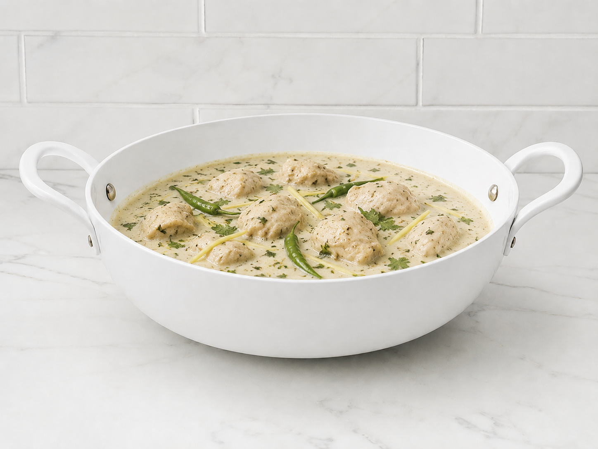

White Karahi
White karahi is a creamy and mildly spiced Pakistani dish known for its rich texture and delicate flavor. It is
usually made with tender chicken cooked in a smooth blend of yogurt, cream, garlic, and subtle spices, without
the use of tomatoes. The dish has a light color but a deeply satisfying taste, making it a popular choice for
those who enjoy less spicy yet flavorful meals.
Go Back